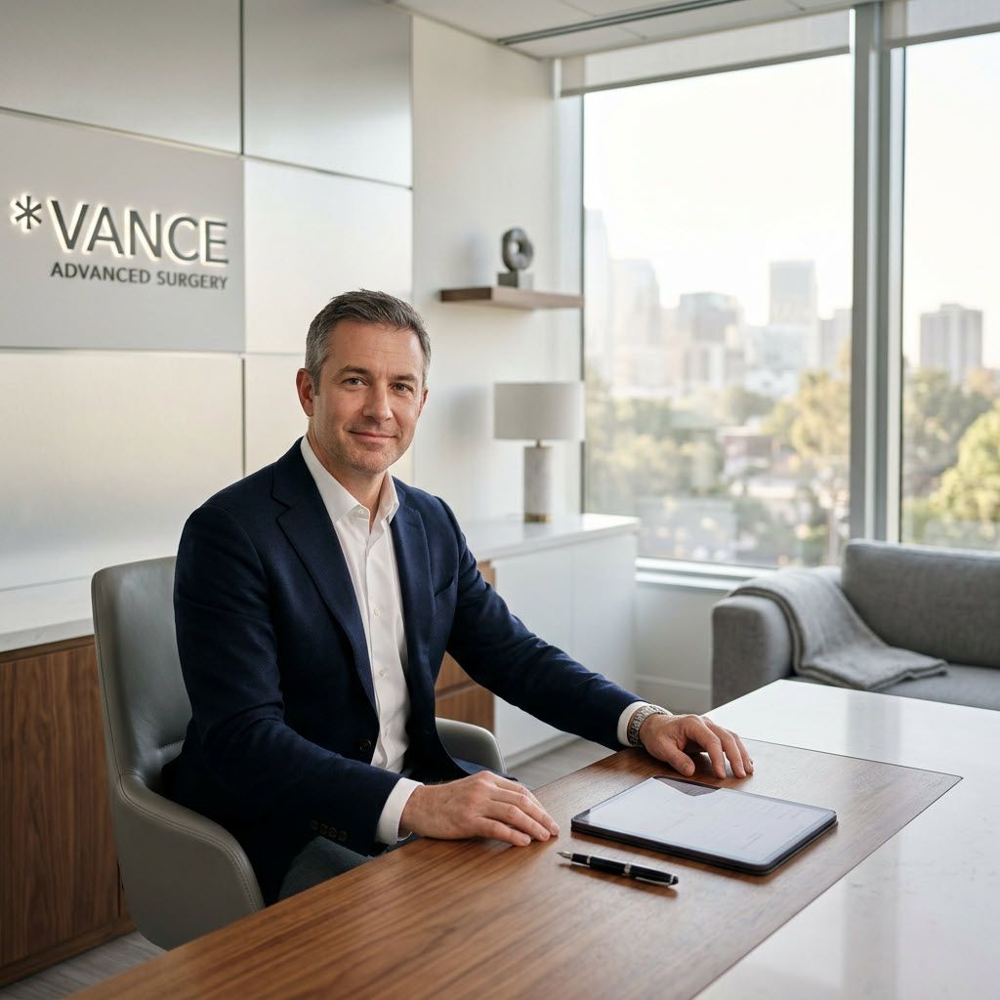

Cirugía Plástica · Medellín
Un enfoque médico centrado en la seguridad, la armonía estética y la toma de decisiones informada desde la primera consulta.
Atención en Medellín · Consulta personalizada · Procedimientos guiados por criterio médico
Conozca al Doctor
Cirujano plástico con formación especializada y más de 15 años de experiencia en procedimientos estéticos y reconstructivos. Su enfoque combina criterio médico riguroso con una visión estética personalizada, priorizando siempre la seguridad del paciente y la claridad en cada etapa del proceso.
Cada consulta está diseñada para ofrecer una evaluación profesional detallada, orientación clara sobre las opciones disponibles y un plan de atención adaptado a las necesidades individuales de cada paciente.
Áreas de Especialización
Cada procedimiento es evaluado de forma individual, con criterio médico y un enfoque orientado a la armonía estética. La consulta personalizada es siempre el primer paso.
Procedimientos orientados a la armonía del rostro, evaluados con criterio médico y adaptados a la estructura individual de cada paciente.
Consultar sobre este procedimiento →Evaluación profesional para procedimientos mamarios con atención a la proporción, la seguridad y las expectativas reales del paciente.
Consultar sobre este procedimiento →Procedimientos corporales con enfoque en la evaluación clínica completa, el bienestar del paciente y resultados coherentes con su contexto individual.
Consultar sobre este procedimiento →Opciones no quirúrgicas y tratamientos complementarios evaluados como parte de un plan integral y profesionalmente orientado.
Consultar sobre este procedimiento →Cómo Funciona
Desde el primer contacto hasta el seguimiento posterior, cada etapa está diseñada para brindar claridad, seguridad y atención profesional.
Reserve su consulta de forma fácil y rápida. Nuestro equipo le confirmará fecha, hora y toda la información necesaria para su primera visita.
Durante la consulta, la doctora realizará una evaluación personalizada, escuchará sus expectativas y analizará las opciones con criterio médico.
Recibirá información detallada sobre el procedimiento recomendado, los cuidados necesarios y todo lo que necesita saber para tomar una decisión informada.
Seguimiento profesional en cada etapa: antes, durante y después del procedimiento. Su bienestar y tranquilidad son prioridad en todo momento.
¿Por Qué Elegirnos?
Cada paciente es único. La evaluación inicial considera su contexto, expectativas y condiciones individuales antes de cualquier recomendación.
Información directa, honesta y comprensible en cada etapa. Sin ambigüedades, sin presiones, sin promesas exageradas.
Las recomendaciones se basan en evidencia, experiencia y responsabilidad clínica. Nunca en tendencias pasajeras ni en presión comercial.
Desde la primera consulta hasta el seguimiento postoperatorio, estará acompañado por un equipo comprometido con su bienestar.
La estética y la medicina van de la mano. Cada procedimiento busca resultados armónicos sin comprometer la seguridad del paciente.
Experiencias de Pacientes
"Desde la primera consulta sentí confianza. La doctora fue clara, profesional y me explicó cada detalle del proceso sin ninguna presión. Me sentí segura en todo momento."
"Lo que más valoro es la honestidad. Me dio una opinión profesional basada en mi caso particular, no una respuesta genérica. La organización del consultorio y el seguimiento fueron impecables."
"El trato fue respetuoso y profesional de principio a fin. Me explicaron todo con claridad, respondieron cada una de mis preguntas y me acompañaron durante toda la recuperación."
Preguntas Frecuentes
Puede agendar su consulta a través de nuestro botón de contacto en esta página, por WhatsApp o llamando directamente a nuestro consultorio. Nuestro equipo le confirmará la disponibilidad y le proporcionará toda la información necesaria para su visita.
La consulta incluye una evaluación personalizada, revisión de su historial clínico, análisis de sus expectativas y una orientación profesional sobre las opciones disponibles. Es un espacio para resolver todas sus preguntas con claridad y sin presión.
Las consultas se realizan en nuestro consultorio ubicado en [Ciudad], [Dirección completa]. El espacio está diseñado para brindar privacidad, comodidad y una experiencia profesional desde el primer momento.
Sí, recibimos pacientes de diferentes ciudades. Contamos con un proceso de coordinación para facilitar su visita, incluyendo orientación sobre logística y programación de citas adaptada a su disponibilidad.
Absolutamente. Recibirá información clara y completa sobre el procedimiento evaluado, incluyendo el proceso, los cuidados pre y postoperatorios, los tiempos de recuperación y toda la orientación necesaria para tomar una decisión informada.

Dé el primer paso hacia una decisión informada. Nuestro equipo está listo para acompañarle con claridad, respeto y compromiso profesional.